Self-Similarity Based Time Warping
Click here to see the paper
Supplementary Material Index
Main Results
MOCAP Examples
Below we show results for aligning MOCAP data from the CMU MOCAP database of a subject doing jumping jacks (Subject 22, action 16), as measured by quaternions, to a video of two men doing jumping jacks (creative commons, sourced from here), as measured by pixels. Below shows the SSMs and the CSWM with the optimal warping path superimposed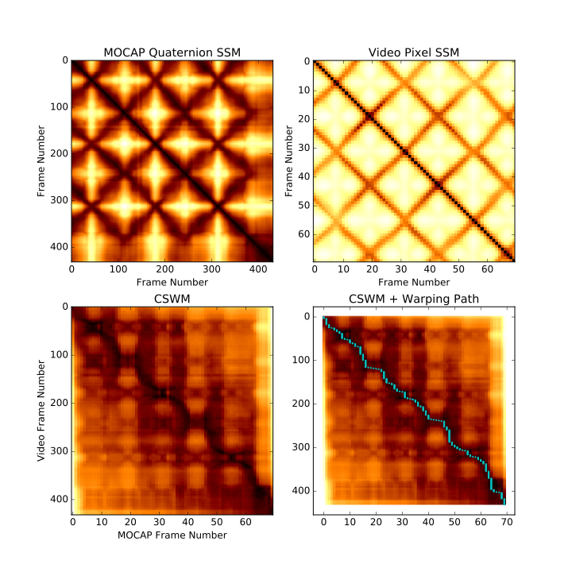
Below is a video of that warping path:
IBDTW_TrueSampleRate.avi |
| Jumping jacks video to MOCAP |
Even though the sample rate is much higher for the MOCAP data, we get visually compelling results. The results are slightly more aesthetically pleasing, however, if we interpolate the video frames to be at a sample rate closer to the MOCAP. Below shows the warping path for that case:
IBDTW_Interpolated.avi |
| Jumping jacks video to MOCAP, video interpolated to higher sample rate |
We show an example of another such synchronization with the same MOCAP data but a different video (creative commons, sourced here). In this video, the woman goes much less uniformly through a jumping jack cycle. Because of this, there are longer vertical lines in the optimal warping path where her video must pause with respect to the MOCAP video, while the MOCAP video catches up. Also, she does not go all the way up as in the MOCAP data, but the optimal alignment still puts her peak frame in correspondence with the peak frame of the MOCAP data. Below shows the CSWM and videos 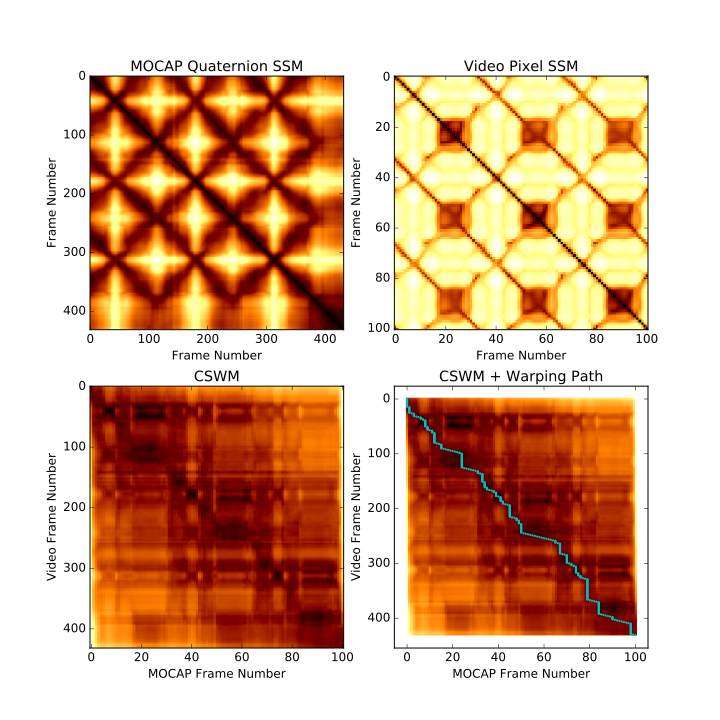
Below is a video of that warping path:
IBDTW_TrueSampleRate.avi |
| Jumping jacks video to MOCAP |
IBDTW_Interpolated.avi |
| Jumping jacks video to MOCAP, video interpolated to higher sample rate |
Weizmann Walking Videos
In our paper, we also reported results for aligning walking videos cropped to 4 cycles each measured with different features: binary mask features and Euclidean Distance Transform (EDT) features. Below is an example of binary mask features from ``Daria'' walking (top) aligned with Euclidean Distance Transform (EDT) features from ``Ira'' walking the other way (bottom), using IBDTW. Ira is walking faster, so she goes through more frames for the same motion under the optimal alignment: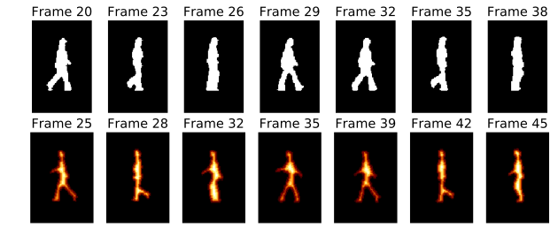
Below is a video showing walking videos of 3 people measured with EDT synchronized to a video of "Daria" measured with binary mask features, using IBDTW:
WeizmannAllCrossModalAligned.avi |
| Warping paths for Weizmann walking videos |
we can also use IBPTW to partially align two walking videos without cropping. Below we show an example of running IBPTW to partially align binary mask features from an uncropped video of Daria walking with EDT features from an uncropped video of Denis walking. SSMs are shown for each in the left two columns, while the PCSWM is shown with the optimal warping path superimposed in the right column.
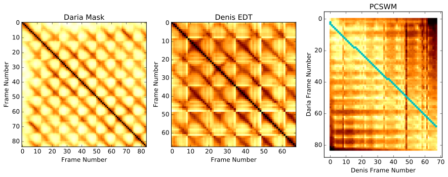
Denis takes longer strides, so he walks across the field of view in fewer steps. He also starts a couple of frames later into his stride than Daria. Both of these facts are correctly accounted for in the optimal warping path. Below is a video corresponding to the warping path above:
Wei1_2_Partial_CrossModal.avi |
| Partial warping path between two videos, as returned by IBPTW |
Cover Song Synchronization
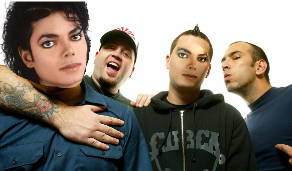Click here to listen to the result of synchronizing two cover songs based on the warping path, using the rubber band library. Please play this file with headphones, as one of them plays in the left ear and the other plays in the right ear.
We synchronize Smooth Criminal by Michael Jackson to Smooth Criminal by Alien Ant Farm using PCSWM on fused MFCC and HPCP self similarity (click here to see more examples of cover songs using these features). We take features equally spaced with a hop size of 46 milliseconds (roughly 22 samples per second for each SSM). Michael Jackson's version has a long intro that is not present in the cover, and it is also at a slower tempo. Both of these facts are reflected in the warping path found below and shown in the audio file linked to at the top of this section, and they can also be seen in the individual SSMs for the features shown below. Listening to the warping path, it is evident that the Alien Ant Farm version keeps speeding up and getting slightly ahead, and then is corrected.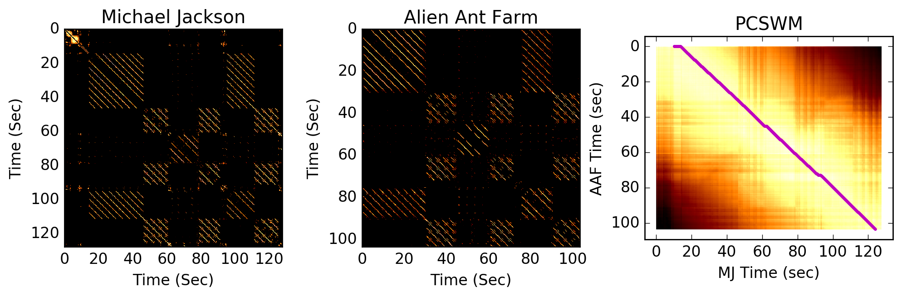
Other Example Warping Paths
Below is an example of the warping paths found by all of the algorithms between two re-parameterized/rotated/translated/warped time ordered epicycloid point clouds: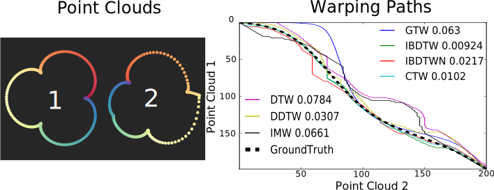
Below is an example of warping paths found between a 2D video and a 3D video of a person making a "surprised" expression in the BU Face Dataset
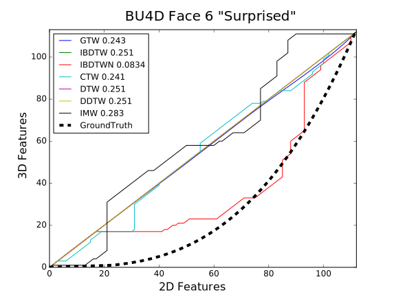
Other Concepts
SSM Warping Concept
The video below shows an example of different time-ordered samplings of a 3-5 torus knot and their effect on the time-ordered self-similarity matrix, which demonstrates the main observation underlying our algorithmSSMsWarped.avi |
| SSMs Warped |
Basis Warping Functions
Below is an image showing the family of orientation preserving homeomorphisms we use as a basis for our random warping paths in all of our experiments: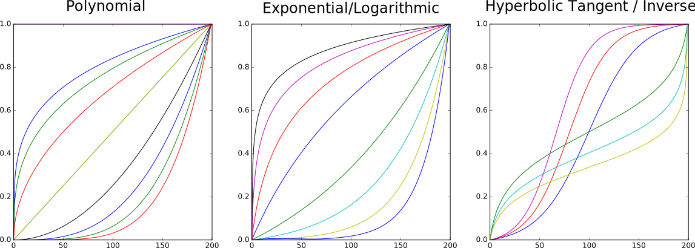
We take random convex combinations of these re-paramterization functions to obtain a new warping path, since orientation preserving homeomorphisms are closed under convex combinations. Below shows an example:
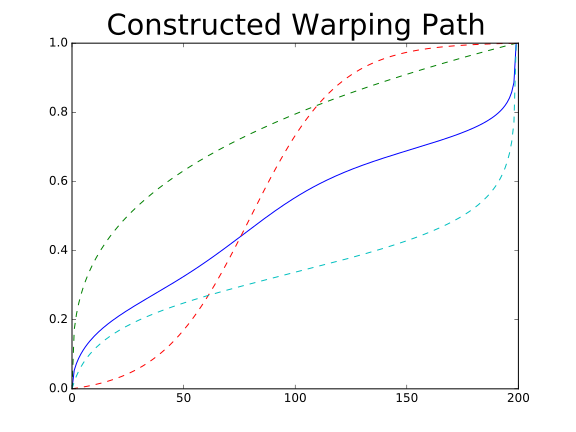
Constrained DTW
We need to incorporate constraints in our algorithm. Below is an example of ordinary DTW on two time-ordered point clouds in the Euclidean plane. The optimal warping path is superimposed in blue on top of the CSM and dynamic programming matrix: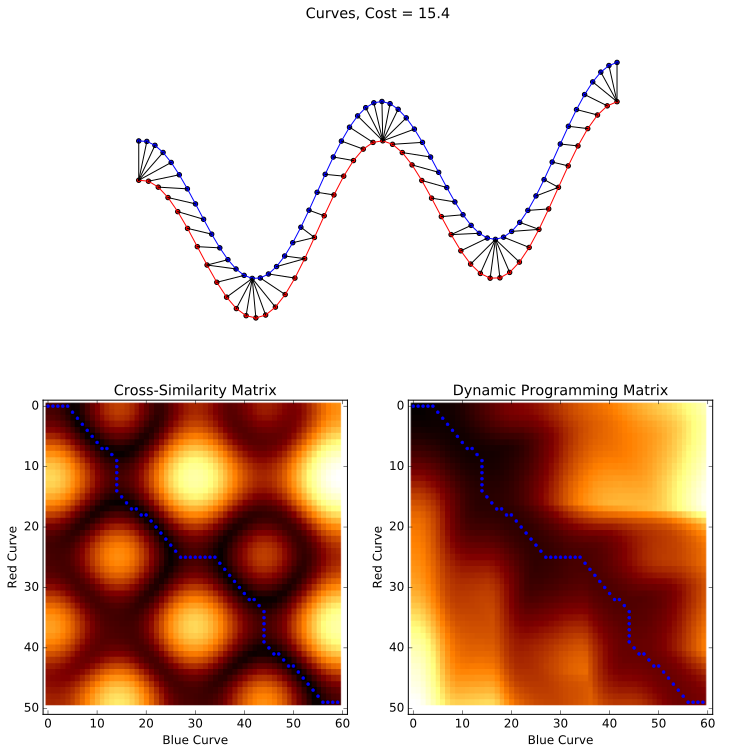
Below shows an example of constrained DTW on the same two point clouds. The constraint is indicated with green points. This leads to a slightly suboptimal path with respect to the global optimum, but it is the lowest cost warping path satisfying the constraint.
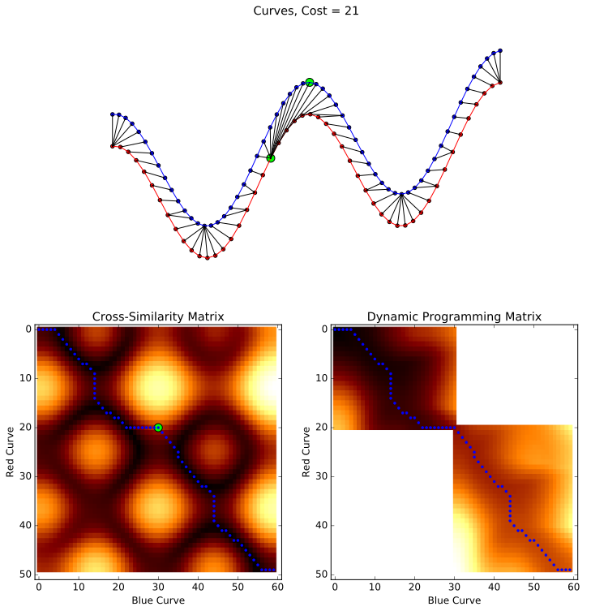